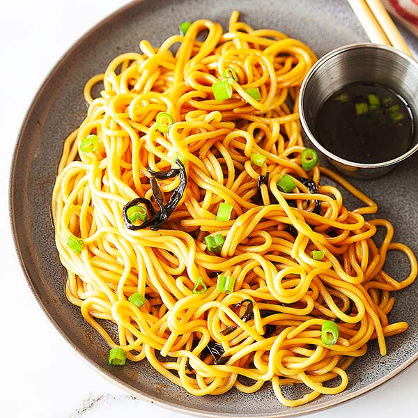

Scallion Oil Noodles Recipe

Details
Prep Time: 30 minutes
Ingredients
- 1/3 cup oil
- 8 ounces scallion
- 3 tbsp dark soy sauce
- 3 tbsp light soy sauce
- 4 tsp sugar
- 1 pound chinese white noodles
Instructions
-
Heat oil in your wok over medium heat, add the scallions, and let them
fry slowly. Once they start to turn golden brown, remove the scallions
from the oil and set aside.
-
To the oil, add both kinds of soy sauce and the sugar. Use low heat and
cook the mixture for about two minutes, until it starts to bubble up.
Back to the Main Page